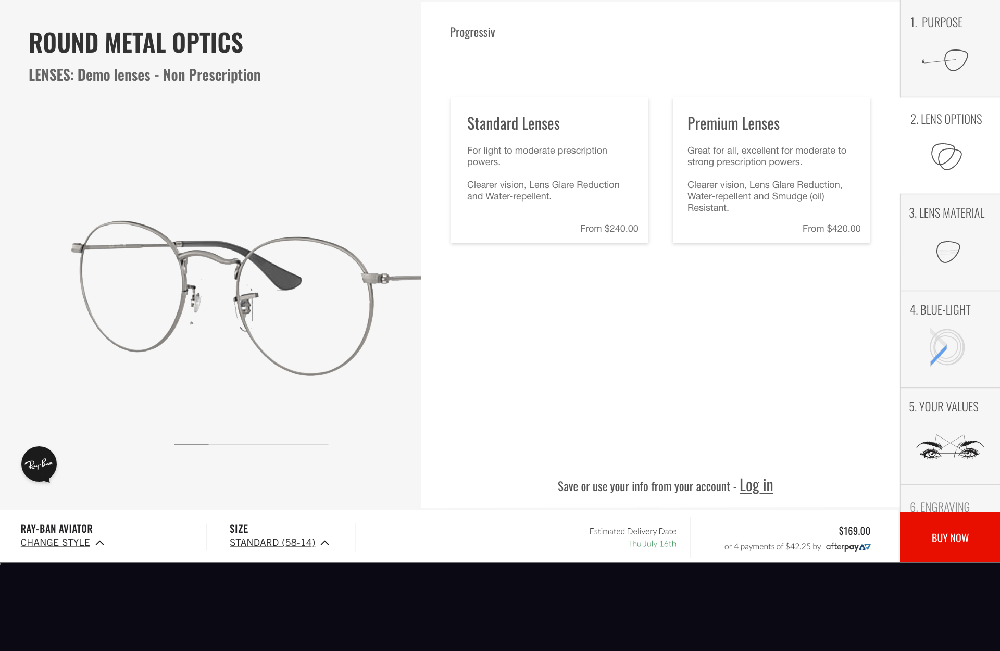
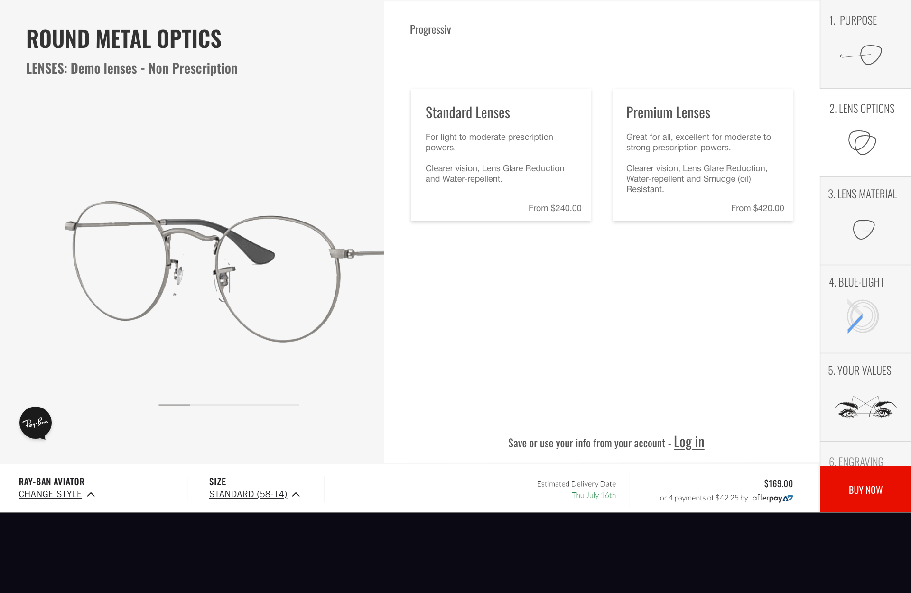

The aim of this project was to improve
the user experience of buying a pair of
glasses with a prescription on RayBan's website.
Previously, it was difficult for the user to understand
the different steps of the flow. RayBan also
wanted to be able to provide the customers with
feedback regarding availability of glasses based
on the information provided in their prescriptions.
To the right you'll see
a new, improved prescription flow where all
the above requirements are met. The design of
visuals and layout are following Rayban's current
line of design to maintain the site's
overall standardizations.

 
